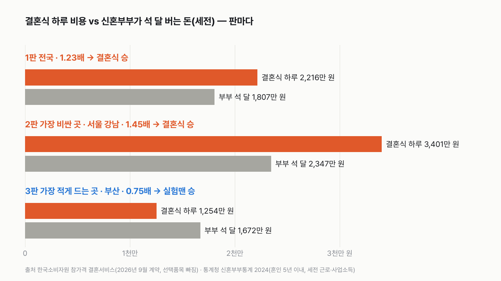
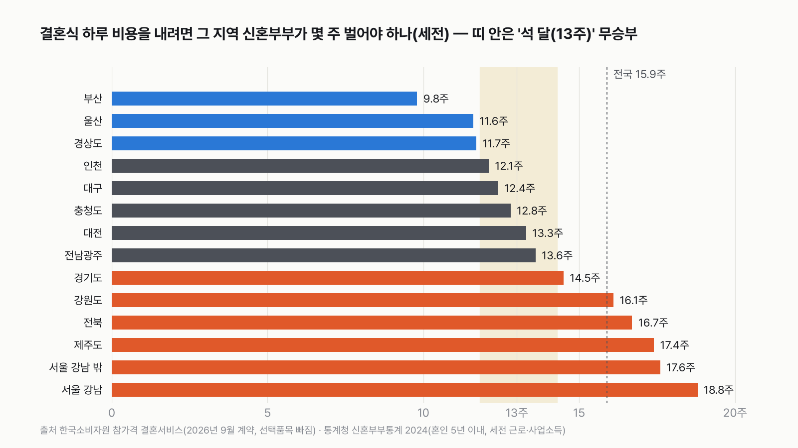
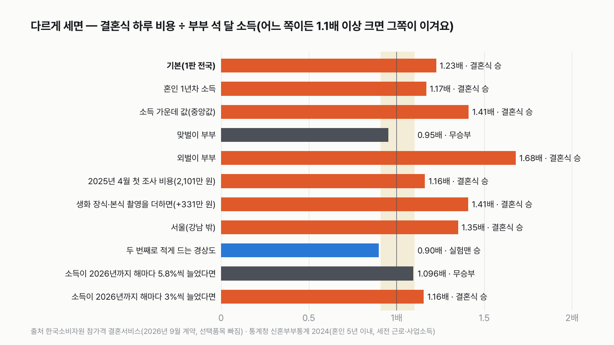

30대 신혼부부 실험맨, 둘이 석 달 벌면 결혼식 하루 비용을 낼 수 있을까
결혼 준비에서 가장 먼저 듣는 숫자가 결혼식 비용이에요. 그 숫자를 '부부가 몇 주 일한 돈인가'로 바꿔 보면 느낌이 달라져요.
독자 투표
30대 신혼부부 실험맨, 둘이 석 달 번 돈으로 결혼식 하루 비용을 낼 수 있을까?
- 이번 실험맨은 서른 초중반에 결혼한 신혼부부 한 쌍이에요. 둘이 함께 결혼식 하루 비용과 겨뤄요.
- 결혼식 하루에는 식대, 대관료, 스드메가 한꺼번에 들어요. 부부가 둘이 버는 돈도 적지 않아요. 석 달 번 돈으로 그 하루를 다 낼 수 있을까요?
- 전국 평균, 결혼식값이 가장 비싼 곳, 가장 적게 드는 곳 세 판으로 겨뤘어요. 동네마다 결혼식값도, 부부 소득도 달라요.
조건과 규칙
- 실험맨은 신혼부부 한 쌍이에요. 2025년 평균 초혼 나이(남편 33.9세, 아내 31.6세)라서 '30대 신혼부부'라고 불러요.
- 실험맨 소득은 통계청 신혼부부통계 2024에서 혼인 5년 이내 부부가 일해서 번 돈(근로·사업소득, 세금 떼기 전)의 1년 평균이에요. 석 달은 1년의 4분의 1로 쳐요.
- 결혼식 비용은 한국소비자원 참가격의 2026년 9월 결혼서비스 평균 계약금액이에요. 대관료, 기본 장식비, 하객 식대, 스드메(스튜디오·드레스·메이크업) 패키지를 더한 값이고, 선택품목은 빠져 있어요.
- 1판은 전국, 2판은 14개 지역 가운데 결혼식값이 가장 비싼 곳, 3판은 가장 적게 드는 곳이에요. 2·3판은 그 동네 신혼부부 소득과 겨뤄요.
- 축의금은 빼요. 축의금이 들어오기 전, 부부가 먼저 내야 하는 금액으로 겨뤄요(축의금 평균을 알려 주는 공식 통계가 없어요).
- 결혼식 비용이 석 달 소득보다 1.1배 이상 크면 결혼식 승, 석 달 소득이 1.1배 이상 크면 실험맨 승, 그 사이는 무승부예요.
결과 요약
3판 결혼식 2승 1패 → 최종 결혼식 승(석 달로는 모자라요)
- 전국 평균 결혼식 하루는 2,216만 원, 신혼부부 석 달 소득은 1,807만 원이에요. 비용이 1.23배라서 결혼식이 이겨요. 부부가 약 16주, 넉 달 가까이 벌어야 해요.
- 결혼식값이 가장 비싼 서울 강남은 3,401만 원이에요. 서울 신혼부부 소득이 전국에서 가장 높은데도 석 달 소득 2,347만 원의 1.45배라 결혼식이 크게 이겨요.
- 결혼식값이 가장 적게 드는 부산은 1,254만 원이라 석 달 소득 1,672만 원으로 넉넉히 내요. 0.75배, 약 10주면 돼요. 이 판은 실험맨이 이겨요.
그래서? 결혼식 하루를 내는 데 전국 평균으로 부부가 약 16주를 일해야 해요. 동네를 바꾸면 10주에서 19주까지 벌어져요. 그런데 판정은 전국 판 하나에 걸려 있어요. 맞벌이 부부로 세거나(0.95배), 2년 사이 소득이 해마다 5.8%씩 늘었다고 쳐 주면(1.096배) 전국 판은 비기고 최종도 1승 1무 1패 무승부예요. 소득 증가율이 해마다 약 5.57%보다 낮으면 결혼식 승이 그대로예요(연 3%면 1.16배).
독자 예상 vs 데이터 결과
30대 신혼부부 실험맨, 둘이 석 달 번 돈으로 결혼식 하루 비용을 낼 수 있을까?
데이터로 보면 석 달로는 모자란다. 전국 결혼식 하루 2,216만 원은 부부 석 달 소득 1,807만 원의 1.23배예요. 서울 강남은 1.45배로 결혼식 승, 부산은 0.75배로 실험맨 승이라 결혼식 2승 1패예요. 맞벌이 부부로 세거나(0.95배) 2년 동안 소득이 해마다 5.8%씩 늘었다고 치면(1.096배) 전국 판이 비겨 최종도 무승부가 돼요.


숫자 하나로 줄이면 이래요. 전국 평균 결혼식 하루는 신혼부부가 세금 떼기 전 기준으로 15.9주 번 돈이에요. 석 달은 13주예요. 약 3주가 모자라요.
| 판 | 결혼식 하루 | 부부 석 달 소득(세전) | 배수 | 몇 주 일해야 | 승자 |
|---|---|---|---|---|---|
| 1판 전국 | 2,216만 원 | 1,807만 원 | 1.23배 | 15.9주 | 결혼식 |
| 2판 결혼식값이 가장 비싼 곳(서울 강남) | 3,401만 원 | 2,347만 원(서울) | 1.45배 | 18.8주 | 결혼식 |
| 3판 결혼식값이 가장 적게 드는 곳(부산) | 1,254만 원 | 1,672만 원(부산) | 0.75배 | 9.8주 | 실험맨 |
| 최종 | 결혼식 2승 1패 |
이긴 폭은 따지지 않아요. 1승은 1승이에요. 판마다 결혼식 비용을 석 달 소득으로 나눠서 결혼식 비용이 1.1배 이상 크면 결혼식 승, 석 달 소득이 1.1배 이상 크면 실험맨 승, 그 사이면 무승부로 쳤어요.
1판 전국: 결혼식 승(1.23배)
전국 평균 결혼식 하루는 2,216만 원이에요. 혼인 5년 이내 신혼부부가 1년에 버는 돈은 평균 7,229만 원이라 석 달이면 1,807만 원이에요. 400만 원 넘게 모자라요. 넉 달을 다 모으면 2,410만 원이라 그때는 낼 수 있어요.
결혼식 비용의 61%는 밥값이에요
2,216만 원을 나눠 보면 하객 식대가 1,360만 원으로 61%예요. 대관료 462만 원, 스드메 317만 원, 기본 장식비 78만 원이 뒤따라요. 예식장 1인당 식대의 가운데 값은 6만 원이고, 최소 보증 인원의 가운데 값은 200명이에요. 6만 원짜리 밥을 200명에게 내면 1,200만 원이에요. 결혼식 하루 비용은 사실상 '하객 밥값'이 정해요.
2판 서울 강남: 결혼식 승(1.45배)
서울 강남 3구 예식장의 평균 계약금액은 3,401만 원이에요. 식대만 2,040만 원이에요. 서울 신혼부부는 1년에 평균 9,388만 원을 벌어 전국에서 가장 많이 벌어요. 그래도 석 달 2,347만 원으로는 1,000만 원 넘게 모자라요. 부부가 약 19주, 넉 달 남짓을 일해야 강남 결혼식 하루가 나와요.
3판 부산: 실험맨 승(0.75배)
부산은 14개 지역 가운데 결혼식값이 가장 적게 들어요. 평균 1,254만 원이에요. 부산 신혼부부는 1년에 6,686만 원을 벌어 석 달이면 1,672만 원이에요. 400만 원 넘게 남아요. 약 10주면 결혼식 하루를 낼 수 있어요. 결혼식값이 두 번째로 적게 드는 경상도로 바꿔도 0.90배라 실험맨이 이겨요.
동네를 바꾸면 10주에서 19주까지


14개 지역마다 '그 동네 결혼식 하루를 그 동네 신혼부부가 몇 주 벌어야 내나'를 셌어요. 부산 9.8주, 울산 11.6주, 경상도 11.7주는 석 달보다 넉넉해서 실험맨이 이겨요. 인천·대구·충청도·대전·전남광주는 12~14주라 석 달 근처에서 비겨요. 경기도부터는 결혼식이 이겨요. 서울 강남이 18.8주로 가장 길어요. 14곳 가운데 실험맨 3곳, 무승부 5곳, 결혼식 6곳이에요.
서울은 소득도 1등, 결혼식값도 1등
서울 신혼부부 소득은 전국 평균보다 30% 많아요. 그런데 서울 결혼식값은 강남 밖도 3,171만 원으로 전국보다 43% 비싸요. 소득이 많은 만큼보다 결혼식값이 더 빨리 올라가서, 서울은 강남이든 아니든 결혼식이 이겨요(강남 밖 1.35배). 반대로 울산은 신혼부부 소득이 전국 평균보다 많은데(7,534만 원) 결혼식값은 1,675만 원이라 실험맨이 이겨요.
맞벌이면 비기고, 외벌이면 크게 져요


신혼부부 소득은 맞벌이냐 아니냐에 따라 크게 달라요. 맞벌이 부부는 1년 9,297만 원이라 전국 판이 0.95배로 비겨요. 외벌이 부부는 5,276만 원이라 1.68배로 결혼식이 크게 이겨요. 결혼 첫해 부부만 보면 7,578만 원으로 1.17배, 여전히 결혼식 승이에요.
평균 말고 가운데 부부로 보면
소득은 몇몇 큰 소득이 평균을 끌어올려요. 신혼부부를 소득 순서로 세웠을 때 가운데 부부는 1년 6,279만 원을 벌어요. 이 부부라면 전국 결혼식 하루가 석 달 소득의 1.41배예요. 소비자원은 지역별 결혼식 총액을 평균으로만 내놓아서, 판정은 평균끼리 맞췄어요.
영수증에 안 찍힌 돈도 있어요
소비자원 금액에는 선택품목이 빠져 있어요. 평균 총액에 예식장 생화 장식과 본식 촬영의 가운데 값(전국 256만 원, 75만 원)만 더해도 2,547만 원이 되고 배수는 1.41배로 올라가요. 첫 조사였던 2025년 4월 전국 평균 2,101만 원으로 세도 1.16배라 결혼식 승은 그대로예요.
축의금은 넣지 않았어요
하객이 내는 축의금으로 식대를 메운다는 말을 많이 해요. 하지만 축의금이 평균 얼마인지 알려 주는 공식 통계를 찾지 못했어요. 그래서 이 글은 '부부가 먼저 내야 하는 돈' 기준으로만 겨뤘어요. 축의금이 들어오면 실제로 부부가 떠안는 돈은 이보다 줄어요. 식대 1,360만 원 가운데 상당 부분을 축의금이 메운다면, 전국 판도 실험맨 쪽으로 넘어갈 수 있어요.
세금을 떼면 더 벌어져요
신혼부부통계 소득은 세금과 보험료를 떼기 전 금액이에요. 실제로 통장에 들어오는 돈은 이보다 적어서, 손에 쥔 돈으로 세면 석 달로 내기가 더 어려워져요. 신혼부부 세후 소득을 지역별로 알려 주는 공식 표는 없어서 숫자로는 넣지 않았어요.
결혼식 하루를 내려고 부부가 함께 일한 주를 세어 보면, 그 하루가 조금 다르게 보여요. 우리 동네라면 몇 주일까요?
이 숫자는 어디서 왔나요
출처
기준일 결혼식 비용은 2026년 9월 계약 기준, 신혼부부 소득은 2024년, 초혼 나이는 2025년이에요. 모두 2026년 11월 9일에 받은 최신 값이에요.
한국소비자원
- 참가격 결혼서비스 통계(지역별 평균 계약금액, 2026년 9월)
14개 지역 결혼식 하루 비용과 구성(식대·대관료·장식비·스드메), 예식장 필수·선택품목 가운데 값
- 전국 결혼서비스 가격 첫 공개(소비이슈 팩트체크, 2025년 7월호)
2025년 4월 첫 조사 전국 평균 2,101만 원, 조사 개요
통계청(국가데이터처)
- 신혼부부 특성별 소득(근로·사업소득) 현황KOSIS DT_1NW1027
2024 혼인 5년 이내 신혼부부 소득 평균·가운데 값(전국·시도·혼인연차·맞벌이 여부)
- 시도별 혼인연차별 신혼부부 수KOSIS DT_1NW1002
여러 시도를 묶은 소비자원 지역(경상도 등)의 소득 가중치
- 시도별 평균초혼연령KOSIS DT_1B83A05
2025년 평균 초혼 나이
어떻게 셌나요
- 배수 = 결혼식 하루 비용 ÷ 부부 석 달 소득(1년 평균 ÷ 4). 몇 주 = 결혼식 비용 ÷ (1년 소득 ÷ 52).
- 결혼식 비용은 참가격 '지역별 결혼서비스 계약 금액'(평균값)으로, 식대·대관료·기본 장식비·스드메 평균 계약금액의 합이에요. 페이지에 적힌 지역별 총액과 네 항목 합이 1만 원 안에서 맞는 것을 확인했어요.
- 소비자원 지역과 신혼부부통계 시도 연결: 서울(강남)·서울(강남 밖) → 서울, 전남광주 → 광주·전남, 충청도 → 충북·충남·세종, 경상도 → 경북·경남. 묶인 곳은 시도별 신혼부부 수로 가중평균했어요.
- 신혼부부 소득은 재혼 부부를 포함한 전체 신혼부부 값이에요. 평균은 소득을 신고한 부부의 근로·사업소득을 소득 미신고 부부까지 포함한 신혼부부 수로 나눈 값이에요(KOSIS 주석).
한계 7가지
이 데이터로 말할 수 없는 것
- 소비자원 결혼서비스 가격조사는 2025년 4월에 시작한 월별 조사예요. 첫 조사는 전국 14개 지역 결혼식장 370곳과 결혼준비대행업체 152곳을 조사원이 찾아가 면접으로 조사했고, 결혼식장 계약 5,000건과 스드메 패키지 등 2,020건의 계약금액을 모았어요. 2026년 9월 값의 업체 수와 계약 건수는 통계 페이지에 나와 있지 않아요. 이 결과가 결혼서비스 시장 전체를 대표하지 않는다는 점은 소비자원이 첫 조사 발표(2025년 4월)에서 밝혀요.
- 결혼식값이 가장 적게 드는 곳은 달마다 바뀔 수 있어요. 2025년 4월 첫 조사에서는 경상도였어요.
- 결혼식 비용에는 선택품목, 예물·예단, 신혼여행, 신혼집이 들어 있지 않아요. 결혼 전체 비용이 아니라 '결혼식 하루' 비용이에요.
- 신혼부부통계의 시도에는 강남 구분이 없어서 서울 강남 결혼식을 서울 신혼부부 평균 소득과 겨뤘어요. 강남에서 결혼식을 올리는 부부가 모두 서울 사람인 것도 아니에요.
- 결혼식 비용은 2026년, 소득은 2024년이라 2년 차이가 있어요. 신혼부부 평균 소득은 2023년 6,834만 원에서 2024년 7,229만 원으로 5.8% 늘었어요(2021~2024년 해마다 4.7~7.2%). 2년 동안 해마다 5.8%씩 늘었다고 치면 전국 판은 1.096배로 비기고 최종도 무승부가 돼요. 해마다 약 5.57%보다 덜 늘었다면 결혼식 승이 그대로예요(3%면 1.16배). 이 증가율은 가정이라 판정에는 넣지 않았어요.
- 소득은 세금 떼기 전 금액이고, 축의금은 공식 통계가 없어 넣지 않았어요.
- 신혼부부통계에는 나이별 소득이 없어서 '30대'는 평균 초혼 나이로 붙인 이름이에요. 혼인 5년 이내 부부 전체 값이에요.
다음 대결
대결 다 보기출퇴근 vs 연차
실험맨이 1년 동안 출퇴근에 쓰는 시간과 연차 휴가로 쉬는 시간, 세 판 승부로 더 긴 쪽은?
A출퇴근vsB연차 휴가
투표하러 가기
대결투표했어요경복궁 승경복궁 vs 에버랜드
경복궁 vs 에버랜드, 다섯 판 승부로 1년에 사람이 더 많이 찾는 곳은?
A경복궁vsB에버랜드
투표하러 가기
대결투표했어요결과: 세계기록 사람마라톤 세계기록 vs 서울 버스
마라톤 세계기록 속도로 뛰는 사람 vs 서울 시내버스, 세 판 승부로 더 빠른 쪽은?
A세계기록 사람vsB서울 버스
투표하러 가기
대결실험맨투표했어요무승부실험맨 vs 수영장
실험맨 혼자 1년 쓴 수돗물로 25m 수영장 레인 한 줄을 채울 수 있을까?
A채운다vsB못 채운다
투표하러 가기
대결실험맨투표했어요고양이 승실험맨 vs 고양이 그루밍
실험맨 vs 고양이, 세 판 승부로 하루 씻고 꾸미는 시간이 더 긴 쪽은 누굴까?
A실험맨vsB고양이
투표하러 가기
대결실험맨투표했어요기린 승고3 vs 기린
고3 실험맨과 기린, 하루에 누가 더 적게 잘까?
A고3vsB기린
투표하러 가기
대결실험맨투표했어요60세 이상 승60세 이상 vs 20대
60세 이상 여성 실험맨과 20대 여성 실험맨, 하루 사람을 만나 어울리는 시간은 누가 더 길까?
A60세 이상 여성vsB20대 여성
투표하러 가기
대결실험맨투표했어요결과: 절반 넘는다실험맨 vs 혼밥
50대 남성 실험맨, 저녁을 대체로 가족과 함께 먹는 사람이 100명 중 절반을 넘을까?
A절반 넘는다vsB절반 못 넘는다
투표하러 가기
새 글 나오면 받아 보기
피드 리더 앱에 이 사이트 주소를 한 번 넣어 두면, 새 글이 올라올 때 앱에 떠요. 가입이나 메일 주소는 필요 없어요.
받는 법 보기
- 피드 리더 앱을 하나 골라요. 새 글을 모아 보여 주는 앱이에요. 예를 들면 Feedly나 Inoreader가 있어요. 둘 다 무료고 웹·휴대폰에서 써요.
- 앱에서 '구독 추가'(+)를 누르고 아래 주소를 붙여 넣어요.
- 끝이에요. 새 글이 올라오면 앱 목록에 떠요.
https://protofu.github.io/opendata-insight/feed.xmlFeedly를 쓴다면 여기를 눌러 바로 추가할 수도 있어요.